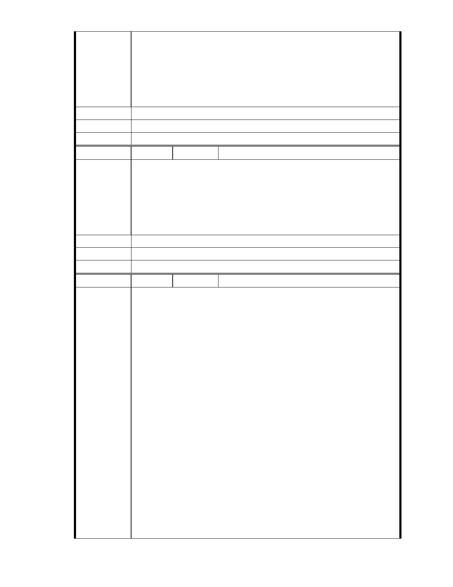

內湖人需要慈濟在內湖推廣其志業,慈濟內湖聯絡處須要一處能遮風避
雨的地方. 懇請市長先生在您的智慧與勇氣協助下讓延宕十幾年的慈濟
內湖園區開發案早日完成.
內湖居民:董葆珍
話:27919344
建議辦法
住址:內湖區大湖山莊街 177 巷 13 號 3 樓
電
市 府 說 明 相關陳情意見將納入本案審查人民意見，依法定程序辦理。
委 員 會 決 議 同編號 1。
編號
陳情理由
建議辦法
49 陳情人 市長信箱（ MA201011290438 ）
市長您好:請依法通過內湖園區發展成為造福國家.社會的場所.
現今社會常因少數人極端偏差想法;影響國家發展及多數人權益.
請贊成並批准慈濟園區興建.
祝福您
陳志文 陳志儒 黃淑貞 王美娟 內湖大湖街 166 巷 22 號 康寧路 3 段
75 巷 28 號 星雲街 125 號 2 樓 TEL:87971520
市 府 說 明 相關陳情意見將納入本案審查人民意見，依法定程序辦理。
委 員 會 決 議 同編號 1。
編
號 50
陳情人 市長信箱（ MA201011290440 ）
TO : 郝龍斌市長
陳情案名：
﹝一﹞「變更台北市內湖區成功路 5 段大湖公園北側部份保護區及道路
用地為社會福利特定專用區主要計劃案」
﹝二﹞「擬定台北市內湖區成功路 5 段大湖公園北側社會福利特定專用
區細部計劃案」
陳情理由
陳情理由：
大湖地區因開發成功路而環境慘遭破壞，包括對於以上保護區的亂
填土、違法使用，大湖淤泥清除不利，市政府公權力不但未能伸張，反
而在經過溫妮、娜莉兩次大淹水，大湖里喪失 5 個寶貴生命與無數財產
之後，居然圖謀方便計劃擬將該保護區開放變更使用，真是令市民無法
接受市政府如此忽視民意及市民身家安全之作法‧
建議辦法：
1.都市計劃中設置保護區的目的何在？若是原始的設置原因沒有消失，
我們就應該努力保護它的原貌，在 87 年大湖里就辦理公民投票，超過 80%
以上的居民希望將該保護區回復保護區原貌，如今 12 年過去，全球氣候
變遷更加劇烈，我們認為市政府應該更積極的保護保護區，取締一切不
當使用的現況，設置水保公園作為後世效法‧
- 47 -